Scikit-Learn
Scikit-Learn, também conhecido como sklearn, é uma biblioteca Python focada em resolver problemas de Machine Learning. Em seu background sklearn utiliza NumPy e Matplotlib.
Embora o campo de Machine Learning seja vasto, o objetivo principal é encontrar padrões nos dados e utilizar esses padrões para tentar fazer previsões. Existem certas categorias nas quais a maioria dos problemas se enquadra.
Digamos que você está tentando desenvolver um modelo de ML para conseguir prever se um email é spam ou não, nesse caso temos um problema de classificação. Agora suponha que você precise criar um modelo para prever o preço de apartamentos de acordo com suas características, agora você tem um problema de regressão (prever um número).
Tudo começa descobrindo primeiro que tipo de problema estamos trabalhando, dependendo do problema, existem etapas semelhantes que devemos seguir para cada caso. Por exemplo, separar os dados em diferentes conjuntos, uma parte para os modelos de Machine Learning aprenderem e outra parte para utilizarmos nos testes. Escolher e avaliar se um modelo de ML aprendeu alguma coisa.
O Scikit-Learn fornece implementações em Python para realizar todas essas tarefas, evitando a necessidade de ter que construí-los do zero.
Sklearn de ponta a ponta
Veremos agora na prática um fluxo de trabalho com sklearn de ponta a ponta e nos aprofundaremos um pouco mais em cada etapa no decorrer dos estudos.
Nesse capítulo vamos explorar um problema de classificação binária ou seja (uma amostra só poder ser uma coisa ou outra). O conjunto de dados que usaremos é o mesmo do capítulo de Matplotlib (uma lista de pacientes anônimos e se eles possuem ou não doenças cardíacas).
Vamos começar importando algumas bibliotecas e carregando os dados:
import matplotlib.pyplot as plt
import pandas as pd
import numpy as np
df = pd.read_csv("heart-disease.csv")
df.head()
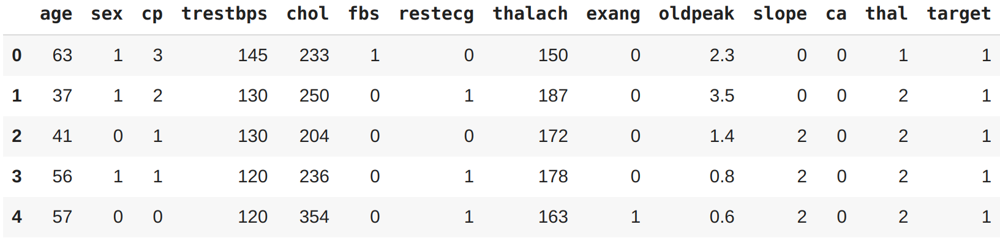
EDA
Uma vez que importamos os dados, a próxima etapa é explorar. Não há uma maneira definitiva para fazer isso. O objetivo é se familiarizar cada vez mais com os dados. Podemos começar verificando quantas vezes cada um dos valores de uma coluna categórica aparece, no caso vamos inspecionar a coluna target utilizando a função value_counts() do Pandas:
df["target"].value_counts()
1 165
0 138
Name: target, dtype: int64
Outra opção é visualizar esses valores em porcentagens, o value_counts() recebe um parâmetro chamado normalize que pode ser definido como True:
df["target"].value_counts(normalize=True)
1 0.544554
0 0.455446
Name: target, dtype: float64
Podemos também plotar esses valores:
df["target"].value_counts().plot(kind="bar", color=["salmon", "lightblue"]);
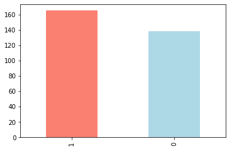
Vamos verificar os valores ausentes que podem existir e os tipos de dados com que vamos trabalhar:
df.info()
<class 'pandas.core.frame.DataFrame'>
RangeIndex: 303 entries, 0 to 302
Data columns (total 14 columns):
# Column Non-Null Count Dtype
--- ------ -------------- -----
0 age 303 non-null int64
1 sex 303 non-null int64
2 cp 303 non-null int64
3 trestbps 303 non-null int64
4 chol 303 non-null int64
5 fbs 303 non-null int64
6 restecg 303 non-null int64
7 thalach 303 non-null int64
8 exang 303 non-null int64
9 oldpeak 303 non-null float64
10 slope 303 non-null int64
11 ca 303 non-null int64
12 thal 303 non-null int64
13 target 303 non-null int64
dtypes: float64(1), int64(13)
memory usage: 33.3 KB
Felizmente nesse caso não temos valores ausentes e todas as colunas são de natureza numérica.
Frequência de doenças cardíacas de acordo com o sexo
Mais uma análise interessante que podemos fazer é verificar a frequência das doenças cardíacas de acordo com o sexo. Para comparar duas colunas entre si, podemos utilizar a função pd.crosstab(coluna_1, coluna_2). Vamos comparar a coluna target com a coluna sex:
pd.crosstab(df["target"], df["sex"])
| sex | 0 | 1 |
|---|---|---|
| target | ||
| 0 | 24 | 114 |
| 1 | 72 | 93 |
Existem cerca de 100 mulheres e 72 delas têm um valor positivo de presença de alguma doença cardíaca, podemo inferi com base nessa variável, se a participante for mulher, há 75% de chance de ela ter uma doença cardíaca.
Quanto aos homens, há cerca de 200 no total, com quase metade indicando a presença de doenças cardíacas. Assim podemos prever que, se o participante for do sexo masculino, 50% das vezes ele terá uma doença cardíaca.
Aplicando a média desses dois valores, podemos supor, com base em nenhum outro parâmetro, caso haja uma pessoa, há 62,5% de chance de que ela tenha uma doença cardíaca.
Esse pode ser nosso baseline, tentaremos vencê-lo com Machine Learning.
O exemplo utilizando crosstab poderia ficar melhor em um gráfico, vamos plotar utilizando alguns parâmetros na função plot() e adicionar alguns atributos explicativos:
# Criando o plot
pd.crosstab(df.target, df.sex).plot(kind="bar",
figsize=(10,6),
color=["salmon", "lightblue"])
# Adicionando atributos
plt.title("Frequência de doenças cardíacas por sexo")
plt.xlabel("0 = Não tem doença, 1 = Doença detectada")
plt.ylabel("Montante")
plt.legend(["Mulher", "Homen"])
plt.xticks(rotation=0); # configura os eixos dos labels para vertical
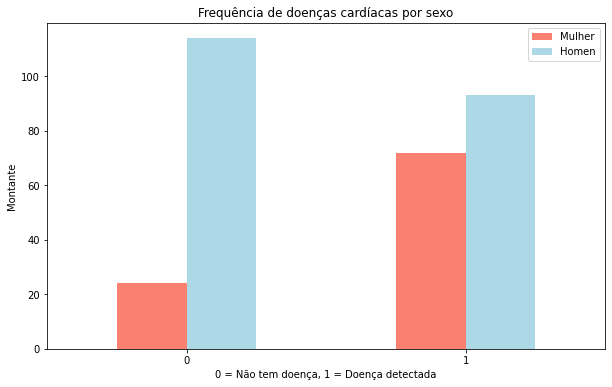
Idade vs Frequência cardíaca máxima para doenças cardíacas
Vamos tentar combinar outras duas variáveis, como idade e thalach (frequência cardíaca máxima) e depois compará-las com a variável target. Como temos muitos valores para as duas variáveis, vamos plotar usando um gráfico do tipo scatter.
plt.figure(figsize=(10,6))
# Plot para valores positivos
plt.scatter(df["age"][df["target"] ==1 ],
df["thalach"][df["target"] == 1],
c="salmon")
# Plot para valores negativos
# queremos plotar no mesmo gráfico então não vamos configurar axes diferentes
plt.scatter(df["age"][df["target"] == 0],
df["thalach"][df["target"] == 0],
c="lightblue")
# Atributos
plt.title("Doença cardíaca em função da idade e da frequência cardíaca máxima")
plt.xlabel("Idade")
plt.legend(["Doença detectada", "Não tem doença"])
plt.ylabel("Frequência cardíaca máxima");
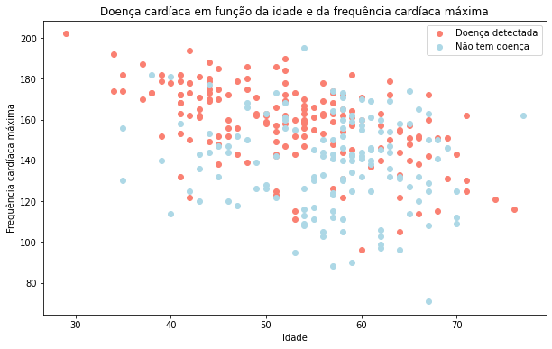
Parece que quanto mais jovem alguém é, maior sua frequência cardíaca máxima (são os pontos mais altos à esquerda do gráfico) e quanto mais velho alguém é, mais pontos azuis existem. Mas isso pode ser porque há mais pontos juntos no lado direito do gráfico (indica participantes mais velhos).
Frequência de Doenças Cardíacas por Tipo de Dor Torácica
Vamos tentar analisar outra variável. Desta vez cp (dor no peito), utilizaremos o mesmo processo de antes:
pd.crosstab(df["cp"], df["target"]).plot(kind="bar",
figsize=(10,6),
color=["lightblue", "salmon"])
# Adicionando atributos ao gráfico
plt.title("Frequência de Doença Cardíaca por Tipo de Dor Torácica")
plt.xlabel("Tipo de dor no peito")
plt.ylabel("Frequência")
plt.legend(["Não tem doença", "Doença detectada"])
plt.xticks(rotation = 0);
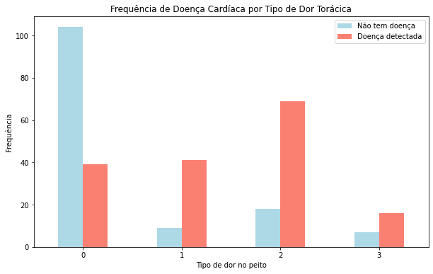
Antes de prosseguir, precisamos de um pequeno dicionário:
- cp (dor no peito)
- 0 (típica dor no peito)
- 1 (dor no peito, não relacionada ao coração)
- 2 (espasmos, não relacionados ao coração)
- 3 (dor torácica, sem sinais de doença)
É interessante notar que o valor 1 afirma que a dor não está relacionada ao coração, mas parece ter uma proporção maior de participantes com doenças cardíacas.
De acordo com o PubMed, parece que até alguns profissionais médicos estão confusos com o termo.
Embora não conclusivo, o gráfico acima é uma alerta que revela a confusão das definições apresentadas nos dados.
Correlação entre variáveis independentes
Por fim, vamos comparar todas as variáveis independentes, plotando em um único resultado. Isso pode nos dar uma ideia de quais variáveis independentes podem ou não ter impacto na nossa variável target.
Para fazer isso podemos usar df.corr() que cria uma matriz de correlação, uma grande tabela de números informando o quanto cada variável está relacionada à outra.
import seaborn as sns
corr_matrix = df.corr()
plt.figure(figsize=(15, 10))
sns.heatmap(corr_matrix,
annot=True,
linewidths=0.5,
fmt= ".2f",
cmap="YlGnBu");
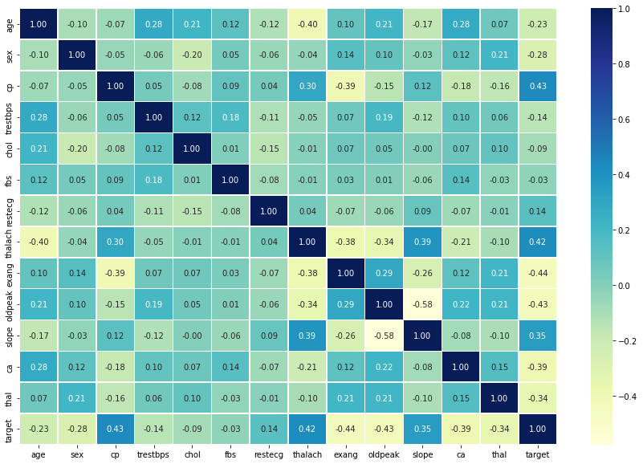
Não se preocupe com a biblioteca
seabornutilizada neste exemplo, falaremos mais sobre ela Apêndice A.
Um valor positivo mais alto significa um potencial para uma correlação positiva e um valor negativo mais alto, significa um potencial para uma correlação negativa.
Modelagem dos dados
Exploramos os dados e agora tentaremos utilizar ML para prever nossa variável target com base nas outras 13 variáveis independentes. Antes de construir um modelo é preciso preparar os dados.
Relembrando, cada linha do DataFrame é um paciente diferente, todas as colunas, exceto target são características dos pacientes. O target indica se o paciente tem doença cardíaca (target=1) ou não (target=0). Em outras palavras, estamos tentando prever o valor da nossa variável target usando todas as outras variáveis. Para fazer isso com sklearn precisamos separar a variável target de todo o resto:
X = df.drop("target", axis=1)
y = df["target"]
X.head()
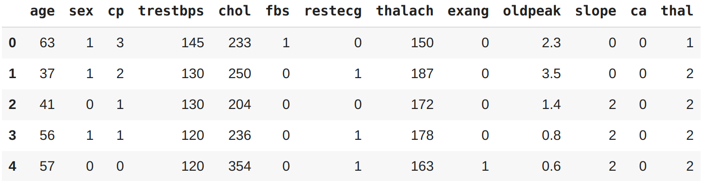
y.head()
0 1
1 1
2 1
3 1
4 1
Name: target, dtype: int64
O que fizemos aqui foi isolar a coluna target na variável y e manter todas as outras colunas na variável X. A utilização de X e y como variáveis são um padrão adotado pelos desenvolvedores (bastante comum nos exemplos que você vai encontrar em outros livros, cursos e repositórios).
Treino e Teste
Chegou o momento de dividir os dados em um conjunto para treino e um conjunto para teste. Esse é um dos conceitos mais importantes em ML.
Utilizaremos o conjunto de treino para treinar o nosso modelo (são os dados que o modelo utiliza para aprender) e o conjunto de testes para testá-lo (são os dados utilizados para validar o modelo).
O conjunto de testes sempre deve permanecer separado do conjunto de treinamento!
E por que não usar todos os dados para treinar um modelo ? Digamos que você queira usar o seu modelo em uma aplicação real de hospital, classificando os pacientes. Como você saberia o desempenho do seu modelo em um novo paciente não incluído no conjunto de dados inicial que você tinha ? E é aqui que entra o conjunto de teste. Ele é usado para simular o máximo possível a utilização do modelo em um ambiente real.
Para dividir nossos dados em dois conjuntos, um de treinamento e outro de teste, podemos usar o train_test_split() do sklearn e alimentá-lo com nossas variáveis (X e y):
from sklearn.model_selection import train_test_split
np.random.seed(42)
X_train, X_test, y_train, y_test = train_test_split(X, y, test_size=0.2)
X_train.head()
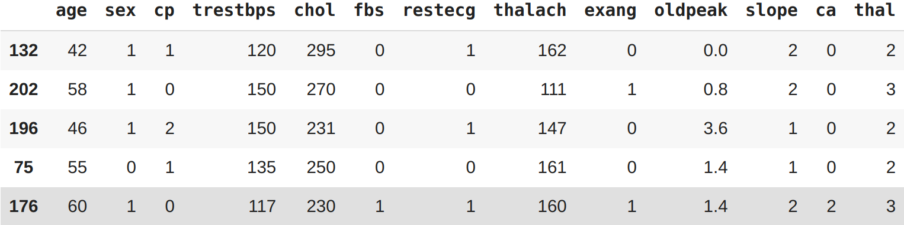
Note o
seeddo NumPy em ação, essa configuração serve para preservar o estado do que faremos aqui, em outras palavras os resultados que você vai ver nos exemplos serão os mesmos no seu ambiente na hora de reproduzir.
O parâmetro test_size é utilizado para informar à função train_test_split() quanto de nossos dados queremos no conjunto de teste. Nesse caso, 0.2 que representa 20%. Uma regra prática é utilizar 80% dos seus dados para treino e os outros 20% para teste.
Para o nosso exemplo, um conjunto de treino e teste são suficientes. Mas para outros problemas, você também pode precisar de um conjunto de validação (treinar, validar e testar).
Escolha de modelos
Agora que os dados estão preparados, podemos começar a treinar os modelos. Vamos utilizar e comparar os resultados dos respectivos modelos:
- Logistic Regression -
LogisticRegression() - K-Nearest Neighbors -
KNeighboursClassifier() - RandomForest -
RandomForestClassifier()
Ok, mas por que esses ? O Scikit-Learn disponibiliza um mapa que podemos seguir para fazer as escolhas do que utilizar como solução para o nosso problema.
Vejamos como fica o nosso problema:
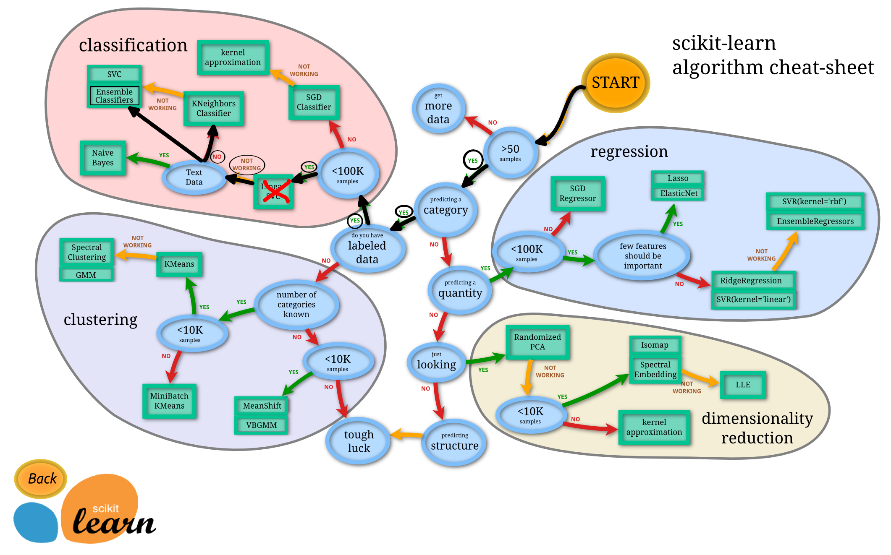
Eu não sei porque
Logistic Regressionnão é listado no mapa, pois ao ler a documentação doScikit-Learnsobre esse tipo de modelo, consta que é um modelo para classificação.
LinearSVC, vamos ignorar, fingir que tentamos e não funcionou, então estamos seguindo para as outras opções no mapa. No momento, conhecer cada um desses algoritmos a fundo não é essencial. Machine Learning e Data Science são uma prática iterativa, esses algoritmos são ferramentas para o seu arsenal. Nesse momento, para se tornar um bom praticante, é mais importante entender o problema que queremos resolver (classificação vs regressão) e depois avaliar quais ferramentas utilizar para resolver os problemas.
Como o nosso conjunto de dados é relativamente pequeno (303 amostras), podemos experimentar para encontrar o algoritmo que oferece o melhor desempenho.
Todos os algoritmos disponíveis na sklearn usam as mesmas funções para treinar um modelo model.fit(X_train, y_train) e para saber se um modelo é efetivo ou não usa a função model.score(X_test, y_test) que retorna a proporção de previsões corretas (1.0 = 100%).
Como os algoritmos que escolhemos implementam os mesmos métodos para treinar e avaliar, vamos colocá-los em um dicionário e desenvolver um modelo que treine com cada um deles e classifique os dados.
# imports
from sklearn.linear_model import LogisticRegression
from sklearn.neighbors import KNeighborsClassifier
from sklearn.ensemble import RandomForestClassifier
# inserindo os algoritmos em um dicionário
models = {"KNN": KNeighborsClassifier(),
"Logistc Regression": LogisticRegression(),
"Random Forest": RandomForestClassifier()}
# criando uma função para treinar e avaliar os modelos
def fit_and_score(models, X_train, X_test, y_train, y_test):
# seed para ter resultados reproduzíveis
np.random.seed(42)
# criando uma lista para armazenar o score dos modelos
model_scores = {}
# loop para executar todos os modelos
for name, model in models.items():
# treina o modelo com os dados
model.fit(X_train, y_train)
# Avalia o modelo e adiciona seu score na lista
model_scores[name] = model.score(X_test, y_test)
return model_scores
# executando a função
model_scores = fit_and_score(models=models,
X_train=X_train,
X_test=X_test,
y_train=y_train,
y_test=y_test)
model_scores
{'KNN': 0.6885245901639344,
'Logistc Regression': 0.8524590163934426,
'Random Forest': 0.8360655737704918}
Olhando para os valores, parece que o modelo LogisticRegression() tem o melhor desempenho. O próximo passo é ajustar os hiperparâmetros dos modelos (configurações refinadas) e avaliar novamente para ver se o ajuste influencia no score.
Ajuste de hiperparâmetros e validação cruzada
Imagine que para fazer uma pizza você ajusta o forno para 180 graus. Mas quando um amigo vai utilizar o mesmo forno para preparar uma pizza, ele utiliza em 200 graus. Temos o mesmo forno, com configurações diferentes, logo teremos resultados diferentes.
O mesmo pensamento pode ser aplicado em ML, podemos utilizar os mesmos algoritmos, aplicando pequenas configurações (hiperparâmetros) e obter resultados diferentes. Assim como ajustar o forno para aquecer mais pode queimar a comida, o mesmo ocorre com os algoritmos de ML. Podemos ajustar as configurações para funcionar tão bem que superajusta os dados.
Queremos encontrar um meio termo, um modelo que se saia bem com o nosso conjunto de dados, mas também que entregue bons resultados em exemplos nunca vistos.
Para testar diferentes hiperparâmetros, podemos utilizar um conjunto de dados de validação, o problema é que não temos muitos dados, então usaremos validação cruzada. O tipo mais utilizado de validação cruzada é o K-fold, basicamente funciona dividindo os dados em grupos menores e, em seguida, testa um modelo em cada um dos grupos. Por exemplo, se tivéssemos 5 folds (k=5):
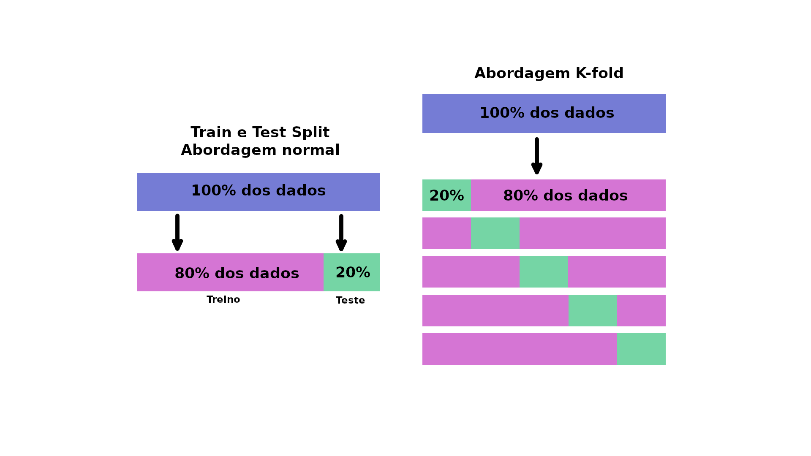
Vamos utilizar essa configuração para ajustar os hiperparâmetros de alguns dos modelos que treinamos e depois vamos avaliá-los.
Ajustando KNeighborsClassifier (KNN)
Existe um hiperparâmetro principal que podemos ajustar para o algoritmo KNN, trata-se do número de vizinhos. Por padrão esse valor é 5 (n_neigbors=5).
Ok, mas o que são esses "vizinhos" ? Imagine todos os dados que plotamos anteriormente em um gráfico do tipo scatter. O algoritmos KNN analisa se os pontos mais próximos pertencem à mesma classe. Ou seja se n_neigbors=5 então KNN assume que os 5 pontos mais próximos ao seu redor estão na mesma classe. O nosso plano no momento é tentar alguns valores diferentes para n_neigbors.
# Lista para armazenar o score de treino
train_scores = []
# Lista para armazenar o score de teste
test_scores = []
# Lista com diferentes valores para "n_neighbors"
# vamos começar com 1 e subir até 20
neighbors = range(1, 21)
# Instanciando o KNN
knn = KNeighborsClassifier()
# Loop para aplicar os diferentes valores em "n_neighbors"
for i in neighbors:
knn.set_params(n_neighbors = i)
# Treina o modelo
knn.fit(X_train, y_train)
# Guarda o score de treino
train_scores.append(knn.score(X_train, y_train))
# Armazena o score de teste
test_scores.append(knn.score(X_test, y_test))
Agora vamos dar uma olhada nos scores de treino para ver qual ajuste tem melhor performance:
train_scores
[1.0,
0.8099173553719008,
0.7727272727272727,
0.743801652892562,
0.7603305785123967,
0.7520661157024794,
0.743801652892562,
0.7231404958677686,
0.71900826446281,
0.6942148760330579,
0.7272727272727273,
0.6983471074380165,
0.6900826446280992,
0.6942148760330579,
0.6859504132231405,
0.6735537190082644,
0.6859504132231405,
0.6652892561983471,
0.6818181818181818,
0.6694214876033058]
Péssima ideia tentar entender esses valores, melhor criarmos um gráfico, vamos ao plot:
plt.plot(neighbors, train_scores, label="Score de Treino")
plt.plot(neighbors, test_scores, label="Score de Teste")
plt.xticks(np.arange(1, 21, 1))
plt.xlabel("Valor ajustado para n_neighbors")
plt.ylabel("Desempenho do modelo")
plt.legend()
print(f"Desempenho máximo de KNN nos dados de teste: {max(test_scores)*100:.2f}%")
Desempenho máximo de KNN nos dados de teste: 75.41%
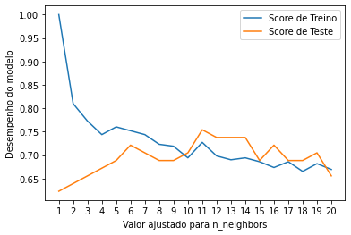
No gráfico, a configuração n_neighbors=11 apresenta o melhor resultado. Mesmo ajustando esse hiperparâmetro o desempenho do modelo KNN não chegou nem perto do resultado de LogisticRegression ou de RandomForestClassifier. Por esse motivo, vamos descartar o KNN e focar nos outros dois que tiveram melhor resultado.
No exemplo de KNN ajustamos o hiperparâmetro manualmente, em vez de fazer isso com LogisticRegression e RandomForest, veremos como automatizar utilizando RandomizedSearchCV, basicamente esse recurso tenta várias combinações diferentes, avalia todas e salva a melhor.
Ajustando modelos com RandomizedSearchCV
A documentação do sklearn mostra que há vários hiperparâmetros diferentes que podemos ajustar para LogisticRegression. O mesmo vale para RandomForest. Vamos implementar um dicionário com diferentes hiperparâmetros para cada um dos algoritmos e depois testá-los:
# LogisticRegression hiperparâmetros
log_reg_grid = {"C": np.logspace(-4, 4, 20),
"solver": ["liblinear"]}
# RandomForestClassifier hiperparâmetros
rf_grid = {"n_estimators": np.arange(10, 1000, 50),
"max_depth": [None, 3, 5, 10],
"min_samples_split": np.arange(2, 20, 2),
"min_samples_leaf": np.arange(1, 20, 2)}
Agora, utilizando o RandomizedSearchCV, vamos tentar ajustar nosso modelo LogisticRegression. Precisamos informar os diferentes hiperparâmetros de log_reg_grid e definir n_iter=20. Em outras palavras RandomizedSearchCV vai trabalhar com 20 combinações diferentes de hiperparâmetros e salvará apenas as melhores.
# Import
from sklearn.model_selection import RandomizedSearchCV, GridSearchCV
# Definindo o seed
np.random.seed(42)
# Configurando hiperparâmetros para LogisticRegression
rs_log_reg = RandomizedSearchCV(LogisticRegression(),
param_distributions=log_reg_grid,
cv=5,
n_iter=20,
verbose=True)
# Treinando o modelo com as 20 combinações possíveis
rs_log_reg.fit(X_train, y_train);
Fitting 5 folds for each of 20 candidates, totalling 100 fits
Agora podemos verificar qual foi o score obtido no treino e qual foi a melhor combinação de hiperparâmetro encontrada:
rs_log_reg.score(X_test, y_test)
0.8852459016393442
rs_log_reg.best_params_
{'C': 0.23357214690901212, 'solver': 'liblinear'}
Agora que ajustamos LogisticRegression, faremos o mesmo com RandomForest:
# Definindo o seed
np.random.seed(42)
# Configurando hiperparâmetros para RandomForestClassifier
rs_rf = RandomizedSearchCV(RandomForestClassifier(),
param_distributions=rf_grid,
cv=5,
n_iter=20,
verbose=True)
# Treinando o modelo com as 20 combinações possíveis
rs_rf.fit(X_train, y_train);
Fitting 5 folds for each of 20 candidates, totalling 100 fits
Verificando o score e a melhor combinação:
rs_rf.best_params_
{'max_depth': 3,
'min_samples_leaf': 19,
'min_samples_split': 4,
'n_estimators': 210}
rs_rf.score(X_test, y_test)
0.8688524590163934
Com os ajustes nos modelos tivemos um leve aumento no desempenho em RandomForrestClassifier e LogisticRegression. Mesmo com LogisticRegression ganhando, vamos tentar ajustá-lo ainda mais com GridSearchCV.
Ajustando modelos com GridSearchCV
A principal diferença entre RandomizedSearchCV e GridSearchCV é que o primeiro pesquisa em um dicionário de hiperparâmetros executando várias combinações definidas em n_iter, enquanto o segundo testará todas as combinações possíveis.
Na prática:
log_reg_grid = {"C": np.logspace(-4, 4, 20),
"solver": ["liblinear"]}
gs_log_reg = GridSearchCV(LogisticRegression(),
param_grid=log_reg_grid,
cv=5,
verbose=True)
gs_log_reg.fit(X_train, y_train);
Fitting 5 folds for each of 20 candidates, totalling 100 fits
gs_log_reg.best_params_
{'C': 0.23357214690901212, 'solver': 'liblinear'}
gs_log_reg.score(X_test, y_test)
0.8852459016393442
Nesse caso, tivemos os mesmos resultados de antes pois nosso dicionário de opções tem no máximo 20 combinações de hiperparâmetros diferentes. Se por acaso houver uma grande quantidade de combinações de hiperparâmetros em seu dicionário, o GridSearchCV levará muito tempo para testar todas as opções. Por isso é recomendado começar com RandomizedSearchCV e tentar com uma quantidade menor de combinações.
Avaliando um modelo de classificação
Agora que o nosso modelo está ajustado, vamos analisar algumas métricas. Para isso, teremos que utilizar o modelo para fazer previsões no nosso conjunto de teste. As previsões podem ser feitas pelo método predict() em um modelo treinado, passando a ele os dados que desejamos prever.
As previsões serão feitas nos dados de teste:
y_preds = gs_log_reg.predict(X_test)
Agora que temos nossos valores de previsão armazenados em y_preds, podemos focar nas métricas.
ROC Curve e AUC Scores
ROC o que ? É uma forma de entender o desempenho do nosso modelo, comparando a taxa de verdadeiros positivos com a taxa de falsos positivos. Ou seja, para o nosso problema, pense em um teste de diagnóstico que verifica se uma pessoa tem uma doença cardíaca. Um falso positivo nesse caso ocorre quando a pessoa testa positivo, mas na verdade não tem a doença. E um falso negativo, ocorre quando a pessoa tem um resultado de teste negativo, sugerindo que está saudável, quando na verdade tem a doença.
Ficou imaginando como fazer essas verificações nos dados ? Pois bem, felizmente Scikit-Learn implementa uma função chamada plot_roc_curve que pode ajudar na criação dessa métrica.
A funçào plot_roc_curve recebe como entrada (estimator, X, y), onde estimator é um modelo de ML ajustado (o nosso modelo treinado anteriormente) e X e y são os dados que queremos testar. Usaremos a última versão do nosso modelo LogisticRegression como estimator e os dados teste (X_test e y_test).
# Import ROC Curve
from sklearn.metrics import plot_roc_curve
# Plot ROC Curve e calcula a métrica
plot_roc_curve(gs_log_reg, X_test, y_test);
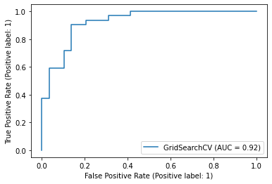
Olhando para esse plot pode parecer um pouco confuso. A principal coisa que podemos observar aqui é que o modelo está se saindo muito melhor do que apenas adivinhar. A métrica usada para quantificar a ROC Curve se chama AUC.
A pontuação máxima dessa métrica que podemos alcançar é 1,0 e, geralmente quanto mais próximo de 1,0 melhor o modelo. A posição mais ideal para essa curva em azul seria ao longo do canto superior esquerdo do gráfico. Isso significaria que o modelo consegue prever apenas verdadeiros positivos e nenhum falso positivo.
Vamos agora para a próxima métrica de avaliação, Matriz de Confusão.
Matriz de Confusão
Uma Matriz de Confusão é uma forma de visualizar onde o modelo fez as previsões certas e onde fez as erradas em outras palavras (onde ele ficou confuso). O sklearn por meio da função confusion_matrix() nos permite criar essa matriz, passando os rótulos verdadeiros e os previstos.
from sklearn.metrics import confusion_matrix, classification_report
print(confusion_matrix(y_test, y_preds))
Ok, essa matriz de confusão embutida do
sklearné sem graça. Vamos melhorar esse visual.
# Seaborn
import seaborn as sns
sns.set(font_scale=1.5)
def plot_conf_mat(y_test, y_preds):
fig, ax = plt.subplots(figsize=(3, 3))
ax = sns.heatmap(confusion_matrix(y_test, y_preds),
annot=True,
cbar=False)
plt.xlabel("rótulos verdadeiros")
plt.ylabel("rótulos previstos")
plot_conf_mat(y_test, y_preds)
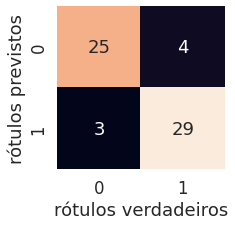
Bem melhor! Podemos ver que o modelo fica "confuso" prevendo o rótulo errado relativamente da mesma forma em ambas as classes. Ou seja, em 4 ocasiões o modelo previu 0 quando deveria ter previsto 1 (falso negativo) e em 3 ocasiões o modelo previu 1 em vez de 0 (falso positivo).
Relatório de classificação
Podemos gerar um relatório de classificação utilizando class_report(), inserindo os rótulos verdadeiros e os rótulos previstos dos nossos modelos. O relatório de classificação, mostra também informações sobre a precisão e revocação de nosso modelo para cada classe.
print(classification_report(y_test, y_preds))
precision recall f1-score support
0 0.89 0.86 0.88 29
1 0.88 0.91 0.89 32
accuracy 0.89 61
macro avg 0.89 0.88 0.88 61
weighted avg 0.89 0.89 0.89 61
Legal, temos o nosso relatório! Mas o que significa isso tudo ? Calma, vamos por partes:
- Precision - mostra a proporção de identificações positivas (classe 1) previstas no modelo, ou seja, que foram realmente corretas. Se um modelo não apresenta falsos positivos esse valor marca
1,0. - Recall - é o indicador de proporção de positivos reais que foram classificados corretamente. Se um modelo não produz falsos negativos então ele apresenta um
recallde1,0. - F1 score - é uma combinação de
PrecisioneRecall. Um modelo perfeito alcança uma pontuação F1 de1,0. - Support - é o número de amostras em que cada métrica foi calculada.
- Accuracy - é a precisão do modelo em formato decimal. A precisão perfeita seria igual a
1,0. - Macro avg - é a média de
Precision,RecalleF1 scoreentre as classes. - Weighted avg - é a média ponderada de
Precision,RecalleF1 score. Ponderado nesse caso, significa que cada métrica é calculada em relação ao total de amostras existentes em cada classe.
Pronto, agora já temos uma visão mais profunda sobre o nosso modelo. Porém, tudo foi calculado utilizando um único conjunto de dados (treino e teste). O que faremos agora para torná-los mais sólidos é calculá-los utilizando validação cruzada. Para isso, pegaremos o melhor modelo junto com os melhores hiperparâmetros e usaremos cross_val_score() junto com vários outros valores de parâmetros de pontuação.
A função cross_val_score() funciona pegando um estimador (modelo de ML) junto com os dados e os rótulos (labels). Em sequência, ele avalia o modelo nos dados e rótulos utilizando validação cruzada.
Quais são mesmo os hiperparâmetros ? Vamos lembrar:
gs_log_reg.best_params_
{'C': 0.23357214690901212, 'solver': 'liblinear'}
Ok, agora é instanciar o classificado com o modelo e os hiperparâmetros:
# Importa cross_val_score
from sklearn.model_selection import cross_val_score
# Passando o melhor modelo com os melhores hiperparâmetros
# que encontramos com (GridSearchCV)
clf = LogisticRegression(C=0.23357214690901212,
solver="liblinear")
Tudo pronto, vamos encontrar algumas métricas de validação cruzada:
# Cross-validated (validação cruzada)
cv_acc = cross_val_score(clf,
X,
y,
cv=5, # 5-fold
scoring="accuracy")
cv_acc
array([0.81967213, 0.90163934, 0.8852459 , 0.88333333, 0.75 ])
Como existem 5 métricas, vamos calcular a média:
cv_acc = np.mean(cv_acc)
cv_acc
0.8479781420765027
Agora faremos a mesma coisa para outras métricas de classificação:
cv_precision = np.mean(cross_val_score(clf,
X,
y,
cv=5,
scoring="precision"))
cv_recall = np.mean(cross_val_score(clf,
X,
y,
cv=5,
scoring="recall"))
cv_f1 = np.mean(cross_val_score(clf,
X,
y,
cv=5,
scoring="f1"))
cv_precision, cv_recall, cv_f1
(0.8215873015873015, 0.9272727272727274, 0.8705403543192143)
Perfeito, temos métricas validadas cruzadas, agora vamos visualizá-las:
# Plot cross-validated metrics
cv_metrics = pd.DataFrame({"Accuracy": cv_acc,
"Precision": cv_precision,
"Recall": cv_recall,
"F1": cv_f1},
index=[0])
cv_metrics.T.plot.bar(title="Métricas de validação cruzada", legend=False);
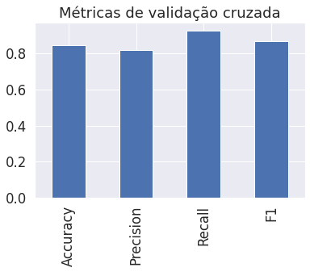
Feature importance
Feature importance é outra forma de perguntar que recursos contribuem mais para os resultados do modelo ?
Para o problema que queremos resolver, tentar prever doenças cardíacas utilizando características médicas de um paciente, quais dessas características contribuem mais para um modelo que prevê se alguém tem uma doença cardíaca ou não ? Diferente de algumas das outras funções que vimos, cada modelo encontra padrões nos dados de maneira ligeiramente diferente, a forma como um modelo julga a importância desses padrões também é diferente. Em outras palavras, para cada modelo, existe uma forma ligeiramente diferente de descobrir quais recursos foram mais importantes.
Como estamos utilizando LogisticRegression, veremos uma maneira de calcular o feature importance para ele. Usaremos o atributo coef_, que é o coeficiente dos recursos na função de decisão (função que julga a importância).
clf.fit(X_train, y_train);
clf.coef_
array([[ 0.00369922, -0.9042409 , 0.67472826, -0.0116134 , -0.00170364,
0.04787688, 0.33490198, 0.02472938, -0.63120406, -0.5759095 ,
0.47095141, -0.65165348, -0.69984208]])
Ok, concordo que olhando para isso não faz nenhum sentido. Mas esses valores representam o quanto cada recurso contribui na forma em que um modelo toma uma decisão sobre se os padrões em uma amostra de dados de saúde de pacientes tem maior tendência para doenças cardíacas ou não.
Mesmo sabendo o significado agora, esse formato atual de array ainda não faz muito sentido. Mas se combinarmos com as colunas do nosso DataFrame, pode melhorar:
features_dict = dict(zip(df.columns, list(clf.coef_[0])))
features_dict
{'age': 0.003699220776580221,
'ca': -0.6516534770577476,
'chol': -0.0017036439067759743,
'cp': 0.6747282587404362,
'exang': -0.6312040612837573,
'fbs': 0.047876881148997324,
'oldpeak': -0.5759095045469952,
'restecg': 0.3349019815885189,
'sex': -0.9042409028785717,
'slope': 0.4709514073081419,
'thal': -0.6998420764664995,
'thalach': 0.02472938284108309,
'trestbps': -0.011613401339975146}
Agora podemos visualizar:
features_df = pd.DataFrame(features_dict, index=[0])
features_df.T.plot.bar(title="Feature Importance", legend=False);
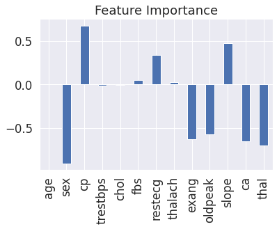
Perceba que alguns são positivos e outros são negativos. Quanto maior o valor (maior barra), mais o recurso contribui para a decisão do modelo. Se o valor for negativo, significa que a correlação é negativa. E para valores positivos a correlação também é positiva.
Veja por exemplo o atributo sex que tem um valor negativo de -0.904, o que significa que a medida que o valor de sex aumenta, mais o valor de target diminui. Podemos ver isso melhor, comparando a coluna sex com target:
pd.crosstab(df["sex"], df["target"])
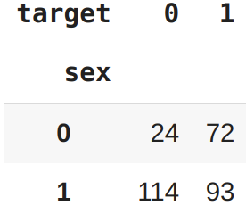
Podemos ver que, quando sex é 0 (feminino), há 3 vezes mais pessoas com doença cardíaca (target=1) do que sem. E para sex 1 (masculino), a proporção cai para quase 1 para 1 de pessoas que tem doenças cardíacas e que não tem. Isso significa que o modelo encontrou um padrão que reflete os dados, olhando para esses números e o conjunto de dados específico, parece que se o paciente é do sexo feminino, é mais provável que tenha doenças cardíacas.
WIP